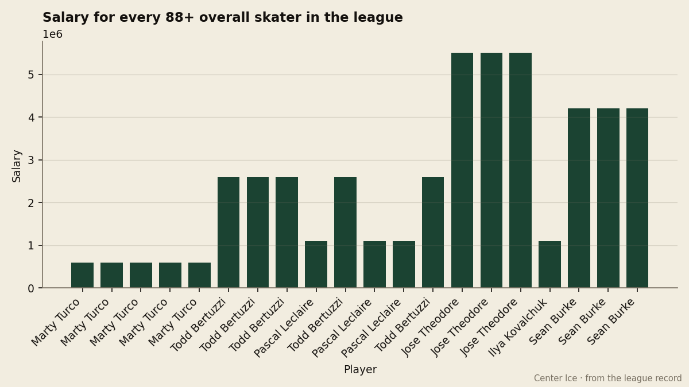
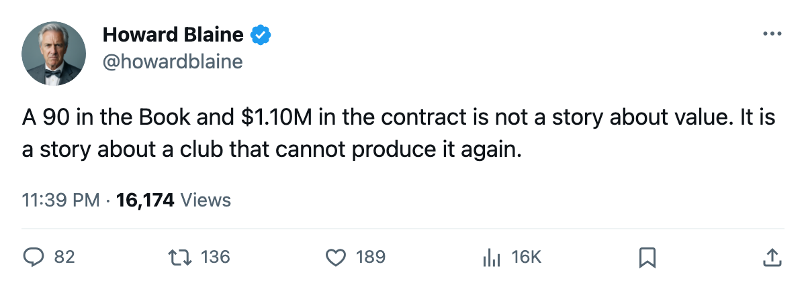
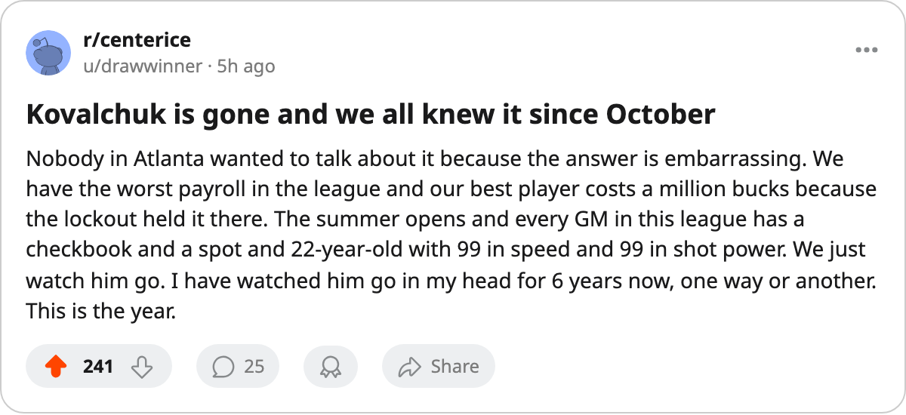

The 90 at $1.10M: Atlanta Holds Two Expiring Minimums on the League's Smallest Payroll, and April Settles Both
Kovalchuk's scoring pace has dropped 42.9 percent from last season, the Bureau puts his potential below his current grade, and his contract expires at the cheapest salary in hockey
 Howard BlaineSenior writer, The Blaine Rankings · The Hockey Gazette
Howard BlaineSenior writer, The Blaine Rankings · The Hockey Gazette
 Ilya Kovalchuk90 has 12 points in 12 games, a 1.00-point pace that would make him the 31st scorer in the league if the season ended today. Last year he scored at 1.75 per game and finished 2nd in the Art Ross with 138 points. The Book does not register a decline. Kovalchuk carries a 90 overall today, 89 base plus 5 on the Development Index, the same grade that marked him one of the league's eight best players a year ago.
Ilya Kovalchuk90 has 12 points in 12 games, a 1.00-point pace that would make him the 31st scorer in the league if the season ended today. Last year he scored at 1.75 per game and finished 2nd in the Art Ross with 138 points. The Book does not register a decline. Kovalchuk carries a 90 overall today, 89 base plus 5 on the Development Index, the same grade that marked him one of the league's eight best players a year ago.
The grade holds. The contract does not. Kovalchuk is signed through this season at $1.10M with 0 years left, and so is  Dany Heatley89, the 89-rated right wing beside him.
Dany Heatley89, the 89-rated right wing beside him.  Atlanta Thrashers has the lowest payroll in hockey at $40.34M. The two cheapest contracts on the roster belong to the two best players on it, and both expire in April.
Atlanta Thrashers has the lowest payroll in hockey at $40.34M. The two cheapest contracts on the roster belong to the two best players on it, and both expire in April.
What the market pays a 90
The Bureau's Book grades players from 50 to 99. At the 90 mark, Kovalchuk stands alongside five others:  David Legwand89 of
David Legwand89 of  Nashville Predators at $8.37M,
Nashville Predators at $8.37M,  Alexei Kovalev84 of
Alexei Kovalev84 of  New York Rangers at $8.57M,
New York Rangers at $8.57M,  Keith Tkachuk88 of
Keith Tkachuk88 of  St. Louis Blues at $9.00M, and
St. Louis Blues at $9.00M, and  Joe Thornton86 of
Joe Thornton86 of  Boston Bruins at $10.74M. Kovalchuk's $1.10M is the cheapest salary attached to a 90 by a margin of $7.27M.
Boston Bruins at $10.74M. Kovalchuk's $1.10M is the cheapest salary attached to a 90 by a margin of $7.27M.
| Player | Overall | Salary | Years left |
|---|---|---|---|
| Ilya Kovalchuk | 90 | $1.10M | 0 |
| David Legwand | 90 | $8.37M | 0 |
| Alexei Kovalev | 90 | $8.57M | 0 |
| Keith Tkachuk | 90 | $9.00M | 0 |
| Joe Thornton | 90 | $10.74M | 0 |
Every player in that column with Kovalchuk's exact overall has a contract expiring in April. Five forwards at 90, all free, all at once, and one of them costs an eighth of what the others do.

The ceiling problem
The Bureau's potential grade for Kovalchuk is 84. His base overall is 89. That is the rare configuration where the Development Index places the projected ceiling below the current standing: the player has already exceeded what the Bureau's model expects him to become, and there is no growth term left to capture. A 22-year-old whose grade says the best version is behind him is a player Atlanta cannot develop out of its payroll problem.
Kovalchuk's current pace of 1.00 points per game sits 42.9 percent below his 1.75 from last season. The league's scoring leader,  Markus Naslund87, has gone the other direction: 1.86 per game this year against 1.68 last, a rise of 10.7 percent. Two men who finished 2 and 3 in the Art Ross last spring, running in opposite directions through the first six weeks.
Markus Naslund87, has gone the other direction: 1.86 per game this year against 1.68 last, a rise of 10.7 percent. Two men who finished 2 and 3 in the Art Ross last spring, running in opposite directions through the first six weeks.
The scoring line on the page says the player is leaving. The Book says he is not. The Bureau keeps 89 on the base and adds 5 for form, a net 90 that places him 7th among all forwards behind only  Jarome Iginla92 at 94,
Jarome Iginla92 at 94,  Todd Bertuzzi89 at 93, Naslund at 91, and three 90s above Kovalchuk in the tiebreak. The numbers disagree, and a club with $40.34M to spend cannot afford to bet on the disagreement being resolved in its favor.
Todd Bertuzzi89 at 93, Naslund at 91, and three 90s above Kovalchuk in the tiebreak. The numbers disagree, and a club with $40.34M to spend cannot afford to bet on the disagreement being resolved in its favor.
The arithmetic of keeping two
Atlanta Thrashers has $2.20M in expiring salary: Kovalchuk and Heatley at $1.10M each. Those two have combined for 20 of Atlanta's 24 goals this season. Heatley has 8 points in 12 games at 89 overall and also has 0 years left. To replace both at the going rate for their grades, Atlanta would need roughly $14M to $19M in new salary, on a roster that currently spends $40.34M. The payroll would rise 35 to 47 percent to keep the same two men.
No club in the league has made that jump in a single off-season. The highest payroll in hockey, New York Rangers at $92.95M, could absorb it. Atlanta Thrashers, at $40.34M with $30.97M in revenue and a $17.71M profit, has the room only if its ownership doubles the spending. The ticket price sits at $80, the building draws 14,789, and the club holds 575 prestige points, the lowest total in the league.
The season record tells the same story from the ice: 4 wins, 7 losses, 1 overtime loss, 9 points, 14th in the East, 6 points behind  Carolina Hurricanes for the 8th position with 70 games remaining. The goal differential is minus 8. No Atlanta player appears among the league's top 30 scorers.
Carolina Hurricanes for the 8th position with 70 games remaining. The goal differential is minus 8. No Atlanta player appears among the league's top 30 scorers.
What the contract says about the future
The Bureau's Development Index has Kovalchuk at +5, which means he is trending upward on form. A hot streak, not a cold one. The Book reads output below grade rather than decline. But the potential at 84 sits in the record and does not move. A club deciding whether to build around a 22-year-old with 84 potential and 89 base is making a decision about whether the ceiling matters more than the floor.
At 90 overall and $1.10M, the floor is the best value in the league. Whether Atlanta can pay for it next October is the question, and the payroll says no. The $17.71M profit will not stretch to a $60M payroll. The 14,789 in attendance at $80 a ticket will not either.
The summer arrives 261 days from today, when the league's free agency period closes. If Atlanta Thrashers cannot find a structure that keeps both Kovalchuk and Heatley at numbers the market sets for 89 and 90 overall players, it will lose the most valuable forward in the league to the lowest bidder among its own owners. No club in this league has a payroll at $40.34M that can carry two $9M players and remain competitive. The arithmetic does not bend because the Book says 90.

